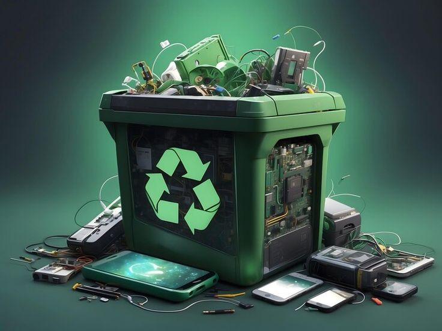
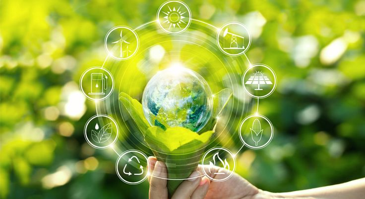

E-Waste
Electronic waste (e-waste) is one of the fastest growing solid waste streams in the world. In 2022, an estimated 62 million tonnes of e-waste were produced globally. Electronic waste, or e-waste, refers to all items of electrical and electronic equipment (EEE) and its parts that have been discarded by its owner as waste without the intent of re-use. Electronic waste also refers to discarded electrical or electronic devices that have reached the end of their useful life. These devices can no longer serve their intended purpose due to redundancy, replacement, or breakage.

E-waste includes a wide range of items, both large and small. Common types of e-waste include: Computers (desktops, laptops, and tablets) Mobile phones and other personal devices (smartphones, e-readers, and so on) Televisions and monitors (LCD, LED, CRT) Household appliances (microwaves, refrigerators, air conditioners, and washing machines) Cameras and radios Printers and scanners Batteries (including rechargeable ones used in electronics) Cables, chargers, and power supplies And more!
 Now, let’s dive a bit deeper into what makes e-waste significant.
Environmental impact: When e-waste is improperly disposed of (such as being dumped in landfills or incinerated), harmful hazardous substances (such as lead, mercury, and cadmium) that can leach into the soil and water, contaminating ecosystems and posing health risks.
Resource wastage: Many electronic devices contain valuable materials like gold, silver, copper, and rare earth elements, which can be recovered through recycling processes.
Data security: Discarded electronics may still contain sensitive information (such as personal data on hard drives or smartphones), which can be a security risk if not properly wiped or destroyed.
Proper disposal and recycling: E-waste recycling involves disassembling devices and recovering valuable materials while ensuring that harmful substances are safely handled.
Many countries have specific laws and regulations regarding the disposal of e-waste, and there are certified e-waste recycling facilities that follow environmentally responsible practices.
Recycling e-waste can help conserve natural resources and reduce pollution, making it an important part of sustainability efforts.
Fact!
The Environmental Protection Agency (EPA) of the United States estimates that recycling one million cell phones can recover 35,000 pounds of copper, 772 pounds of silver, 75 pounds of gold, 33 pounds of palladium among others.
That is approximately;
$ 158,900 worth of copper
$ 224,111.6 worth of silver
$ 2,454,768 worth of gold
$ 33,114 worth of palladium
$ 2,870,893.6 worth of all the above elements
UGX 10,765,851,000 worth of all the above elements
The Growing Problem
Each year, the world generates an additional 2.5 million tons of e-waste.
Radios, toys, phones, laptops—anything with a battery supply—joins this growing mountain of discarded electronics.
In 2019, a staggering 53.6 million tons of e-waste were generated worldwide. That’s roughly 7.3 kilograms per person, equivalent in weight to 350 cruise ships!
Asia led the pack, followed by America, Africa, and Oceania.
By 2030, the total global e-waste generation is projected to swell to 74.7 million tons, almost doubling the annual amount of new e-waste in just 16 years.
Our world’s fastest-growing domestic waste stream is fueled by shorter product lifecycles and limited repair options.

Did You Know
Each year, International E-Waste Day is held on 14 October, which makes an opportunity to reflect on the impacts of e-waste and the necessary actions to enhance circularity for e-products. It was launched by the WEEE Forum as a day dedicated to tackling the e-waste problem one device at a time.
Impacts of E-Waste
E-waste has significant environmental and health impacts, including:
Growing Waste Stream: E-waste is rapidly increasing, with only a small fraction properly recycled.
Toxicity: It contains harmful substances like lead and mercury, which contaminate soil, water, and air.
Health Risks: Informal recycling, often in developing countries, exposes workers and communities, especially children, to dangerous chemicals.
Environmental Pollution: E-waste contributes to soil, water, and air pollution, harms biodiversity, and adds to greenhouse gas emissions.
Resource Loss: Valuable materials like gold and rare earth elements are lost when e-waste is not recycled properly.
Climate and Ozone Damage: Improper disposal worsens climate change and can deplete the ozone layer.
In summary, improper e-waste management leads to pollution, health hazards, and resource waste, highlighting the need for better recycling practices.